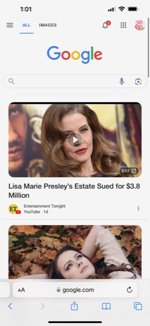

Visual Hierarchy
Visme
"Visme.co"

As you may already know, the principle of "Visual Hierarchy" means that we must arrange page elements to show their order of importance. This can be accomplished with pictures, colors, font sizes, etc. which guides the audience to our desired content.
In visme, you can see the principle of
Rules of Thirds
Tesla
"Tesla.com"
Another important design principle is the "Rules of Thirds", which has been around for centuries as it is simple but yet powerful. The "Rule of Thirds" simply requires to divide a frame in nine equal parts and place your elements on either intersections or lines.
If you visit tesla's main page, you can see this principle being applied through their video that is located at the top. The cars are place strategically in these video frames creating a great visual effect and guiding their visitors to the user experience they are trying to sale.
White Space and Clean Design
"Google.com"
Design principles offer a variety of options and "White Spane and Clean Design" is another choice that has been proven successful through time. In this principle, we learn that we do not need to clutter our pages and less is more.
Google is a great example at utilizing this principle, as you visit google main page notice all the white space. They have have been one of the top's search engines in the industry for years. They were not afraid at utilizing this clean desing and lots of white space.